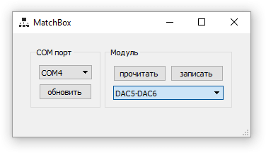

Модули Matchbox предназначены для расширения входов/выходов контроллера. Подключаются модули к контроллеру по интерфейсу RS485. Этот же интерфейс используется для их настройки. Настройка модуля заключается в выборе его имени. Например модули дискретного ввода могут иметь имена IN4, IN5, IN6 и т.д. По этим именам к ним может обращаться программа контроллера, связывая с каждым именем определённую логику работы. Настраивать каждый модуль можно только индивидуально, т.е. к адаптеру USB/RS485 при настройке должен быть подключен только один модуль (на линии RS485 не должно быть других устройств).
Модули доступны для настройки только в течении 30 секунд после подачи на них питания.
Ниже представлен внешний вид утилиты настройки модулей
Последовательность действий для настройки модуля Matchbox
